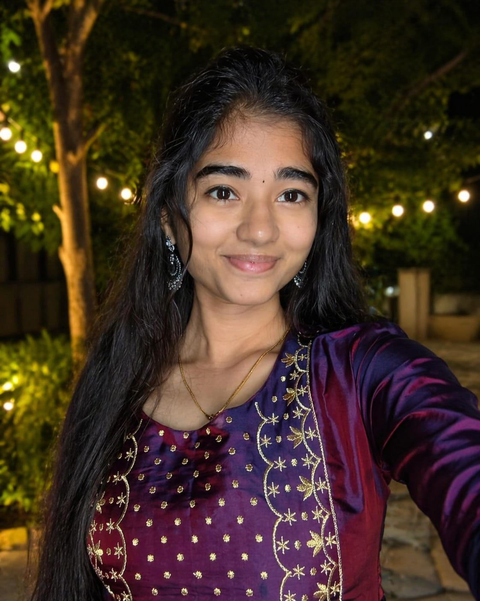
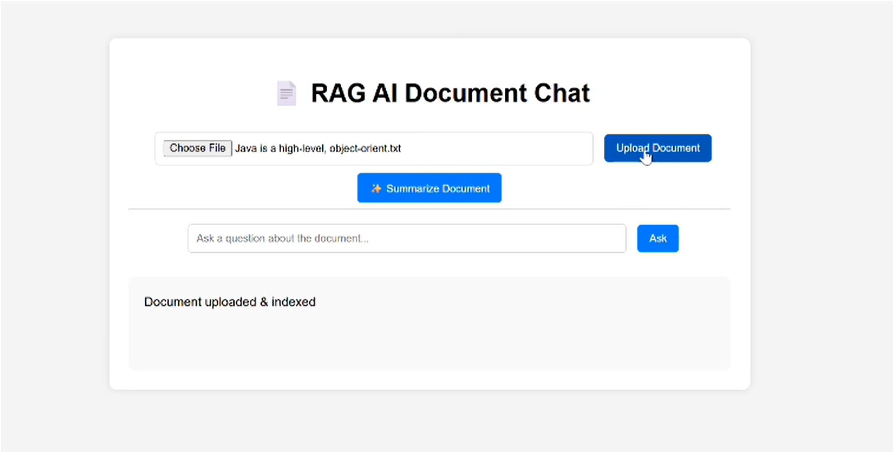
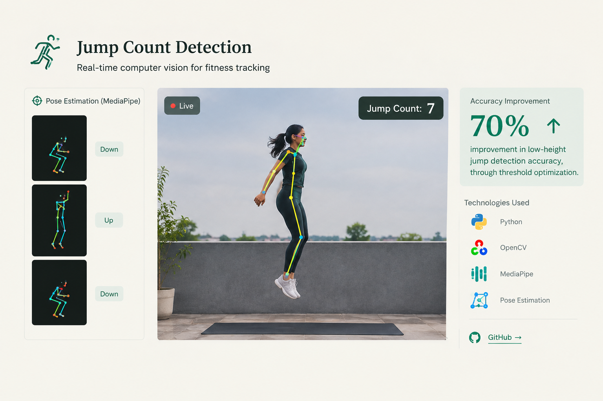
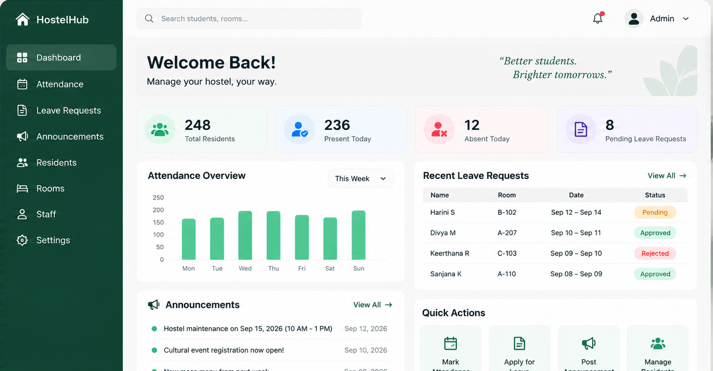
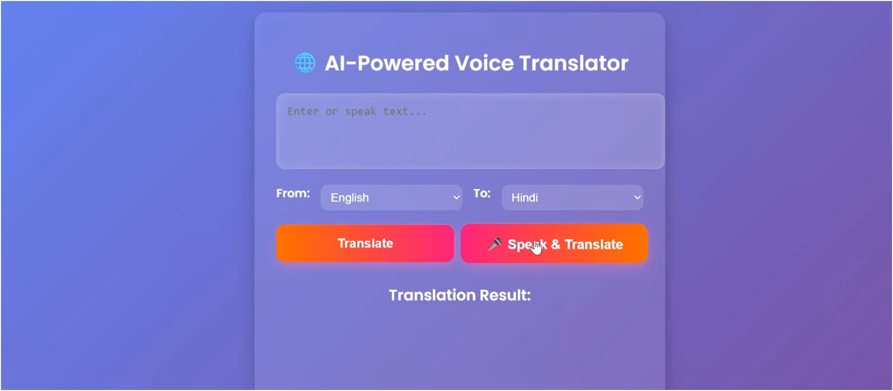
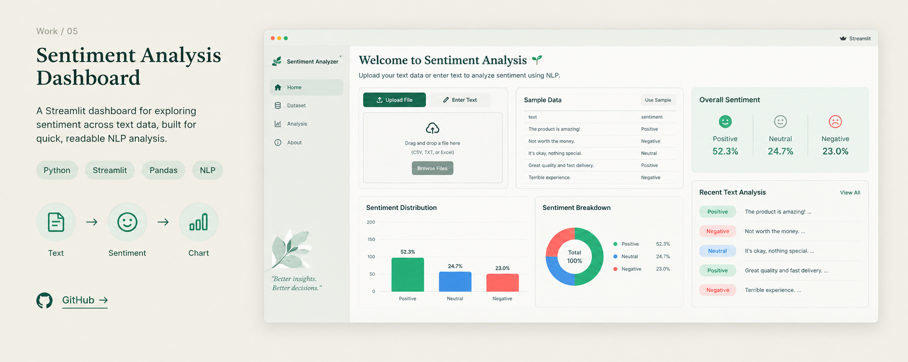
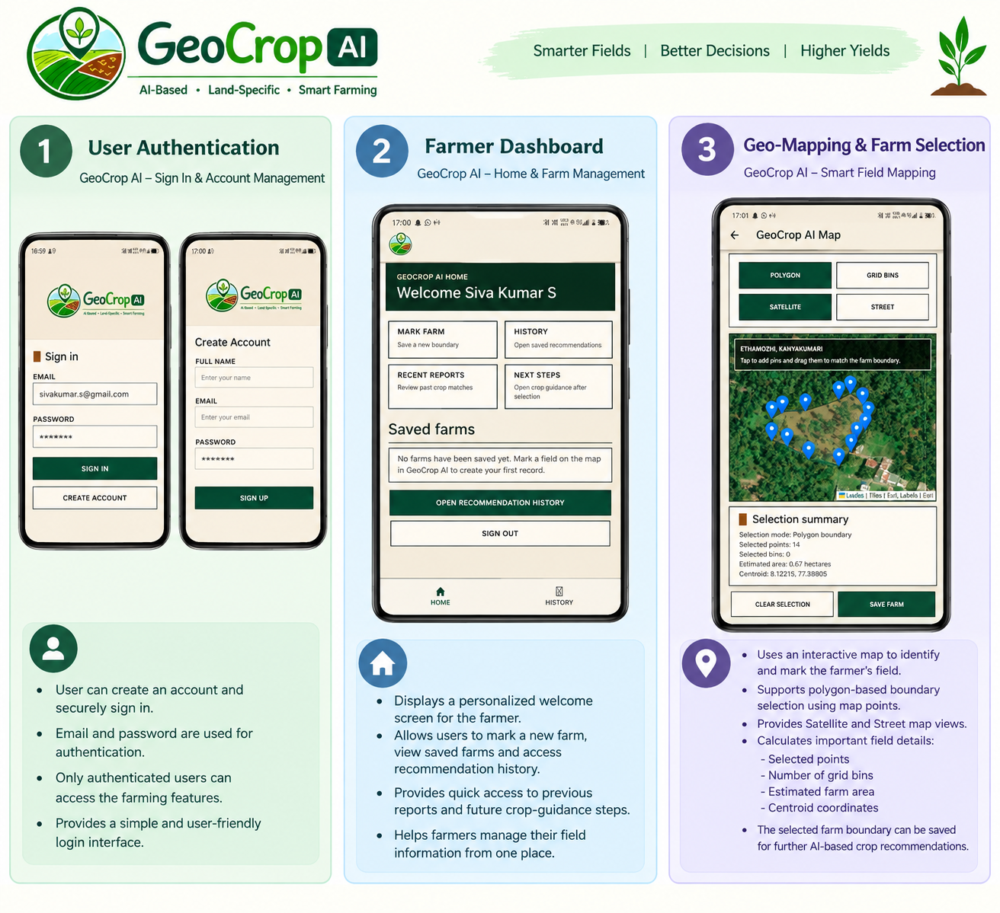
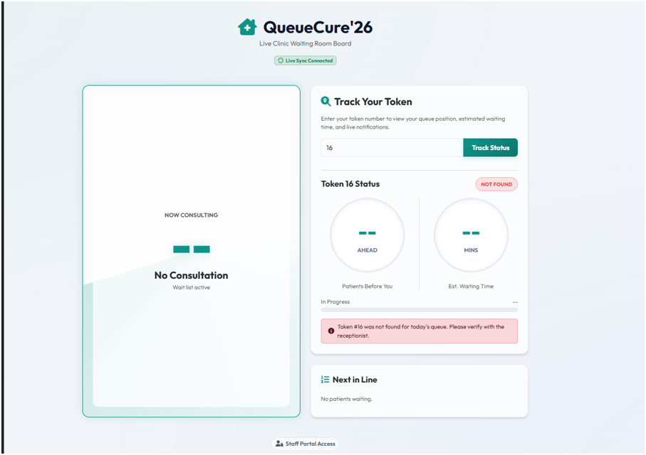

July 2025 — August 2025
Artificial Intelligence Intern
Pinnacle Labs
Built an AI-powered real-time translator with speech recognition, translation and text-to-speech.
Python
Flask
React.js

An AI software engineer who builds and ships LLM-powered applications and computer vision systems — from retrieval-augmented pipelines to real-time inference tools.
Comfortable across the full stack with Python, Flask and React.js, with a focus on taking AI systems from prototype to working, deployed products.
A retrieval-augmented generation system for summarizing and answering questions over PDF, DOCX and TXT documents.
Semantic search finds the relevant passages; Gemini generates grounded answers. Deployed on Hugging Face Spaces.
GitHub → Live Demo →
A real-time computer-vision system that counts jumps for fitness tracking using pose estimation.


Digitized attendance and daily operations for a hostel, with QR-code and location-based attendance verification, leave management and announcements.
A real-time translator combining speech recognition, translation and text-to-speech in one flow.

A Streamlit dashboard for exploring sentiment across text data, built for quick, readable NLP analysis.

An AI-powered mobile application that recommends suitable crops using soil characteristics, weather conditions, location and satellite imagery.

A Spring Boot and MySQL based travel planning system with intelligent destination recommendations and full-stack integration.
A real-time clinic queue management system that helps receptionists manage patient tokens while allowing patients to track their queue position, estimated wait time, and consultation status live.

Building beyond my own repositories.
I contribute to real repositories across AI/ML, developer tooling and cloud infrastructure — fixing bugs, implementing features, improving integrations and working through maintainer feedback.
Repositories contributed to include Local Deep Research · AnythingLLM · Floci · OpenHands · RAGFlow · Pollinations · Open WebUI · Apache Airflow · Composio · software-agent-sdk.
Built an AI-powered real-time translator with speech recognition, translation and text-to-speech.
Built ETL pipelines for processing and transforming data while gaining hands-on experience with data engineering workflows and Databricks.
Aug 2023 — Mar 2027 · CGPA 8.71
Programming fundamentals
Full-stack development
Generative AI + LLMs
NLP + Data
Computer Vision
Learning by solving, one problem at a time.
I regularly practice data structures and algorithms through coding challenges, focusing on problem solving, logical thinking and efficient solutions.
A concise view of my experience, skills and work.
AI Software Developer focused on building practical AI applications, data-driven systems and reliable software.
Download Resume ↓ View Resume ↗I'm interested in building practical AI systems, working on meaningful software, and contributing to open source.